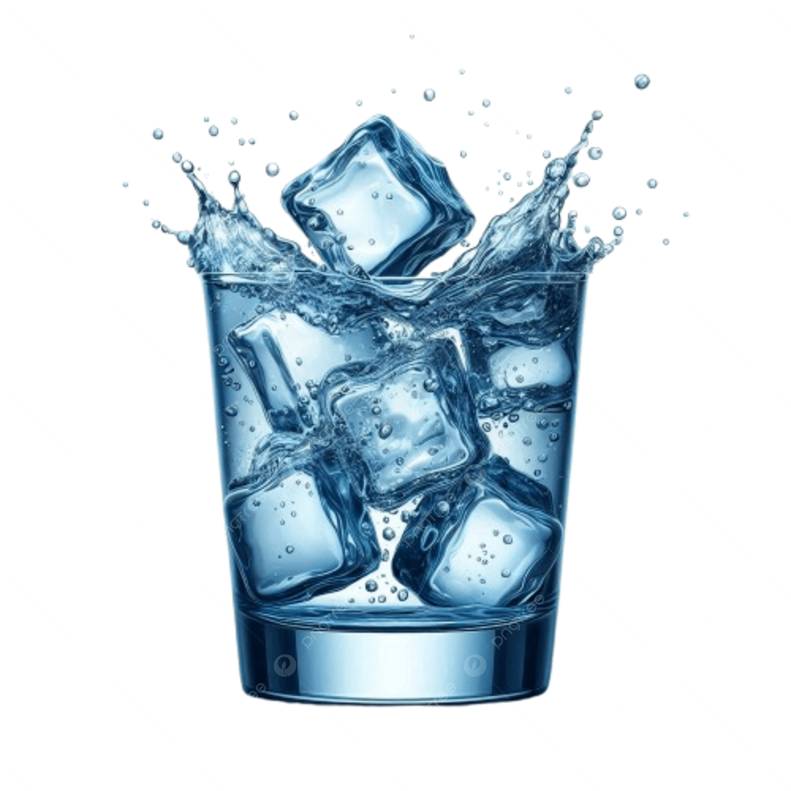

Fundamentos de Biología
Lección 1: Introducción a la biología

¿Qué es la vida?
Definición básica
La biología es la rama de la ciencia que se dedica al estudio de los seres vivos, o lo que comúnmente llamamos “vida”. En este contexto, la vida se entiende como un conjunto de procesos que caracterizan a los organismos vivos.
Características de los seres vivos
- Organización: Están formados por células especializadas.
- Crecimiento: Aumentan su tamaño o complejidad con el tiempo.
- Metabolismo: Transforman energía y materia para mantenerse vivos.
- Respuesta a estímulos: Reaccionan a cambios en su entorno.
- Reproducción: Generan descendencia con características similares.
- Evolución: Presentan cambios genéticos a lo largo de generaciones.
Importancia del orden y la energía
Los seres vivos mantienen su organización interna usando energía constantemente. Aunque la naturaleza tiende al desorden (entropía), los organismos pueden conservar estructuras complejas gracias al flujo de energía.
Conclusión
La vida es un conjunto dinámico de procesos que incluyen metabolismo, orden, respuesta, reproducción y evolución. La biología busca comprender cómo estos procesos se manifiestan en todos los niveles, desde moléculas hasta ecosistemas.
La ciencia de la biología
Qué es la biología como ciencia
La biología es la rama de la ciencia que estudia la vida. No se limita a describir los seres vivos, sino a comprender sus procesos, mecanismos y cómo interactúan con su entorno.
El método científico en biología
En biología se utilizan observación, formulación de hipótesis, experimentación y análisis para explorar preguntas sobre la vida. A través de este método, los biólogos diseñan experimentos y recolectan datos para entender fenómenos como el crecimiento, la reproducción o la evolución.
Interdisciplinariedad
La biología no funciona de forma aislada: se relaciona con la química (bioquímica), la física (biofísica), la ecología, la genética, entre otras disciplinas. Estas conexiones permiten explicar desde moléculas hasta ecosistemas.
Estructura y organización de los seres vivos
Los organismos biológicos están organizados en múltiples niveles: moléculas, células, tejidos, órganos y organismos. Esta jerarquía es fundamental para comprender cómo se mantiene la vida y cómo emergen las propiedades biológicas complejas.
La biología como ciencia en acción
Los biólogos desarrollan conocimientos aplicables: ya sea para mejorar la salud, cuidar el medioambiente o crear tecnologías biológicas. Esta ciencia evoluciona constantemente a medida que se descubren nuevos mecanismos y se refina el entendimiento de la vida.
Agua y Vida
Importancia biológica del agua
El agua es una molécula esencial para todos los seres vivos. Su polaridad y capacidad para formar enlaces de hidrógeno le permiten actuar como un excelente solvente, facilitando reacciones químicas y el transporte de sustancias dentro de los organismos.
Estructura y propiedades del agua
Una molécula de agua (H₂O) está formada por dos átomos de hidrógeno y uno de oxígeno. Puede formar puentes de hidrógeno, lo que da lugar a propiedades únicas como la cohesión, adhesión y alta capacidad calorífica.

Agua y reacciones bioquímicas
El agua participa directamente en muchas reacciones metabólicas, incluyendo procesos de síntesis y degradación. Además, actúa como vehículo para transportar nutrientes, iones y productos de desecho.
Densidad y estado sólido
Cuando el agua se congela, las moléculas se organizan formando una estructura menos densa que el agua líquida. Por eso el hielo flota, permitiendo que los ecosistemas acuáticos sobrevivan bajo la capa de hielo en climas fríos.
Rol del agua en los organismos
En la mayoría de los seres vivos, el agua representa un gran porcentaje del cuerpo. En los humanos, aproximadamente el 70 %. Contribuye a la termorregulación, transporte interno, lubricación y mantenimiento de la estructura celular.
Lección 2: La química de la vida

Materia, Elementos y Átomos
¿Qué es la materia?
La materia es todo aquello que ocupa espacio y tiene masa. Incluye todo lo físico: sólidos, líquidos y gases. En biología, gran parte de la materia se refiere a moléculas presentes en los organismos, como proteínas, carbohidratos y lípidos.
Elementos químicos
Un elemento químico es una sustancia formada por un solo tipo de átomo. Cada elemento tiene propiedades únicas según su número atómico y masa atómica. En la biología, elementos como el carbono, hidrógeno, oxígeno y nitrógeno son esenciales para la vida.

Átomos: estructura básica
Un átomo está compuesto por un núcleo (formado por protones y neutrones) y electrones que giran alrededor. Los protones tienen carga positiva, los electrones negativa, y los neutrones son neutros. Estos componentes determinan las propiedades químicas del átomo.

Isótopos
Los isótopos son variantes de un mismo elemento con diferente número de neutrones. Aunque tienen el mismo número de protones, su masa puede variar. En biología, algunos isótopos son útiles para estudios radiológicos o trazadores moleculares.
Enlaces atómicos y moléculas
Los átomos pueden formar enlaces químicos (iónicos, covalentes, metálicos) para crear moléculas. En los seres vivos, muchas moléculas complejas están formadas por átomos unidos por enlaces covalentes, lo cual permite la formación de cadenas de carbono y estructuras estables.
Importancia biológica
La composición química de los organismos depende principalmente de unos pocos elementos: carbono, hidrógeno, oxígeno, nitrógeno, fósforo y azufre. Estos elementos forman moléculas biológicas esenciales: ADN, proteínas, lípidos y carbohidratos.
Capas Electrónicas y Orbitales
Estructura de las capas electrónicas
Los electrones alrededor del núcleo del átomo no giran en órbitas fijas como planetas, sino que ocupan regiones llamadas capas o niveles de energía. Cada capa tiene un número cuántico principal (n) que indica su distancia al núcleo y energía.
Subcapas y orbitales
Dentro de cada capa hay subcapas (s, p, d, f), y cada subcapa contiene orbitales. Los orbitales son “nubes” de probabilidad donde es más probable encontrar un electrón.

Principio de Aufbau y configuración electrónica
El principio de Aufbau establece que los electrones se llenan primero en los orbitales de menor energía, siguiendo un orden específico. Esto determina cómo se distribuyen los electrones en los diferentes niveles y subniveles.

Energía y forma de los orbitales
Los orbitales tienen diferentes formas (esférica para s, de “pesas” para p, más complejas para d y f) y diferentes niveles energéticos. Los electrones tienden a ocupar primero los orbitales más cercanos y de menor energía.
Importancia biológica
La forma en que los electrones se distribuyen en capas y orbitales es esencial para entender la reactividad química de los elementos. En biología, esto ayuda a explicar por qué ciertos átomos (como carbono, oxígeno y nitrógeno) forman moléculas estables que son fundamentales para la vida.
Enlaces Químicos
¿Qué son los enlaces químicos?
Los enlaces químicos son las fuerzas que mantienen unidos a los átomos para formar moléculas o compuestos. Estos enlaces permiten que la materia adopte estructuras estables y desempeñe funciones biológicas.
Tipos principales de enlaces
Existen varios tipos de enlaces, según cómo se compartan o transfieran los electrones:
- Enlace iónico: transferencia de electrones entre átomos, formando iones.
- Enlace covalente: dos átomos comparten uno o más pares de electrones.
- Enlace metálico: los electrones se mueven en un “mar” de electrones entre átomos metálicos.
Enlace iónico
En un enlace iónico, un átomo dona electrones a otro, generando iones con cargas opuestas que se atraen por fuerzas electrostáticas. Este enlace suele ocurrir entre metales y no metales.

Enlace covalente
En un enlace covalente, los átomos comparten pares de electrones. Dependiendo de la electronegatividad, puede ser polar o no polar.

Enlace metálico
En los metales, los electrones no están ligados a un solo átomo sino que se mueven libremente entre muchos átomos, lo que explica propiedades como la conductividad eléctrica.

Importancia biológica de los enlaces químicos
Los enlaces químicos son fundamentales para la vida. Las moléculas biológicas (como proteínas, ADN, carbohidratos) dependen de estos enlaces para su estructura y función.
Reacciones Químicas
¿Qué es una reacción química?
Una reacción química es un proceso en el que una o más sustancias (reactivos) se transforman en nuevas sustancias (productos). Durante esta transformación, se rompen enlaces de los reactivos y se forman nuevos enlaces en los productos.
Energía en las reacciones químicas
Las reacciones requieren un impulso de energía llamado energía de activación. Dependiendo del proceso, las reacciones pueden liberar energía (reacciones exergónicas) o absorber energía (reacciones endergónicas).
Reactivos, productos y equilibrio
Los reactivos son las sustancias iniciales y los productos son las sustancias finales después de la reacción. Algunas reacciones son reversibles, lo que significa que los productos pueden volver a transformarse en reactivos.
Tipos de reacciones
Hay reacciones que liberan energía (exotérmicas) y otras que la absorben (endotérmicas), lo cual tiene importantes implicaciones en los sistemas biológicos.
Importancia biológica
Las reacciones químicas son esenciales para los seres vivos: permiten el metabolismo, la síntesis de moléculas grandes como proteínas y ácidos nucleicos, y el almacenamiento o liberación de energía en procesos vitales.
Lección 3: Agua, ácidos y bases

Mecanismos de evolución, selección natural, mutaciones y la adaptación de las especies a su entorno.
Lección 4: Las propiedades del carbono
Mecanismos de evolución, selección natural, mutaciones y la adaptación de las especies a su entorno.